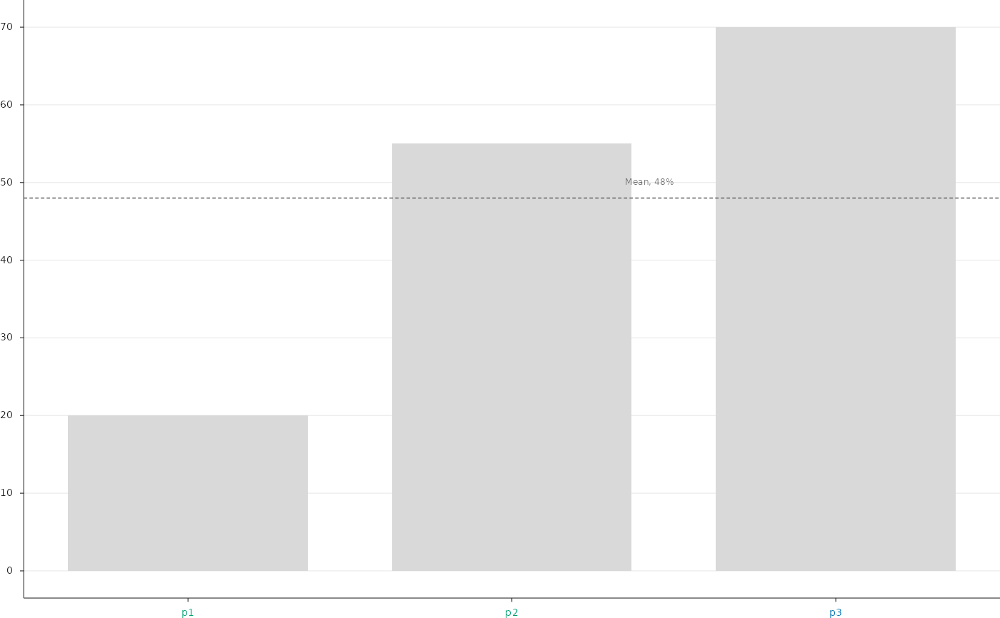

Vertical or horizontal bars per unit (patient), single, side by side or stacked by a series column, with tick labels coloured by group, an optional reference line with a label from summary data, text at the end of each bar and a corner note.
Usage
PlotBars(
data,
x = "x",
y = "value",
series = NULL,
x_order = NULL,
x_labels = NULL,
fills = "#D9D9D9",
series_order = NULL,
position = c("identity", "dodge", "stack"),
width = 0.74,
edge_colour = NA,
edge_linewidth = 0,
horizontal = FALSE,
log_y = FALSE,
tick_group = NULL,
group_colours = NULL,
tick_angle = 0,
tick_size = NULL,
stats = NULL,
reference = NULL,
reference_label = NULL,
reference_label_dy = 1.5,
reference_label_size = 4.6,
bar_label = NULL,
bar_label_d = 2,
bar_label_scale = 0,
bar_label_size = 4.4,
bar_label_colour = "muted",
note = NULL,
note_xy = c(0.02, 0.97),
note_size = 4.8,
note_hjust = 0,
note_vjust = 1,
value_limits = NULL,
value_breaks = NULL,
value_labels = NULL,
value_expand = NULL,
value_nbins = 9,
x_label = NULL,
y_label = NULL,
title_size = 5.6,
grid = TRUE,
box_mm = NULL,
style = ManuscriptStyle()
)Arguments
- data
Tidy data: one row per unit (and series).
- x
Unit column;
ythe bar value.- y
Value column.
- series
Optional series column (bars side by side or stacked).
- x_order
Unit order (left to right, or top to bottom when horizontal).
- x_labels
Tick labels.
- fills
Colour (one, or named per series).
- series_order
Series order (stacking from the bottom; side by side from the left).
- position
"identity","dodge"or"stack".- width
Total bar width per unit.
- edge_colour, edge_linewidth
Bar outline.
- horizontal
Horizontal bars.
- log_y
Logarithmic value axis.
- tick_group
Optional group column colouring the unit tick labels.
- group_colours
Named group colours.
- tick_angle
Rotation of unit tick labels.
- tick_size
Unit tick label size.
- stats
Optional one-row data frame for the reference line and the note.
- reference
Column of
statsgiving a reference value line.- reference_label
Template written above the right end of the line.
- reference_label_dy
Its offset in value units.
- reference_label_size
Its size.
- bar_label
Optional template written at the end of each bar.
- bar_label_d
Offset in value units.
- bar_label_scale
Further offset as a fraction of the bar value.
- bar_label_size
Size.
- bar_label_colour
Colour of the bar labels.
- note
Optional template (first row of
stats) atnote_xy.- note_xy, note_size, note_hjust, note_vjust
Note placement.
- value_limits, value_breaks, value_nbins
Value axis.
- value_labels
Optional tick labels for
value_breaks.- value_expand
Optional upper value limit as a multiple of the largest bar (the lower limit is then zero).
- x_label, y_label
Axis titles (x is the unit axis).
- title_size
Axis title size.
- grid
Grid lines along the value axis.
- box_mm
Size of the data area
c(width, height)in millimetres, passed byRenderFigure(); used by"auto"tick intervals (seeNiceBreaks()).- style
A
ManuscriptStyle()object.
Examples
d <- data.frame(id = c("p1", "p2", "p3"), v = c(20, 55, 70), g = c("A", "A", "B"))
PlotBars(d, x = "id", y = "v", tick_group = "g", group_colours = c(A = "#009E73", B = "#0072B2"),
stats = data.frame(m = 48), reference = "m", reference_label = "Mean, {m|f0}%")
